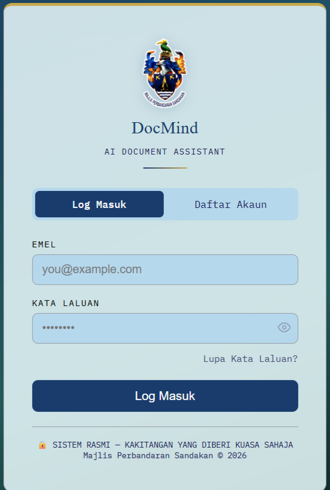
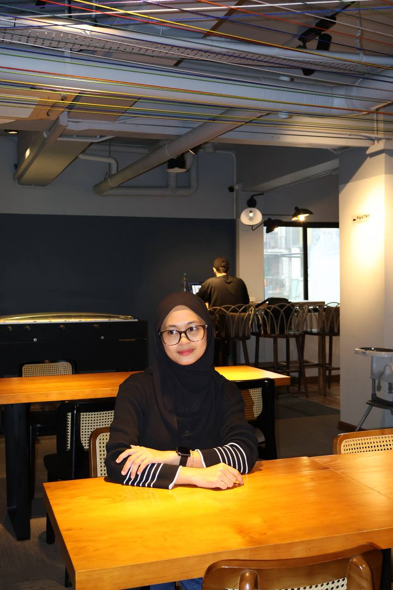
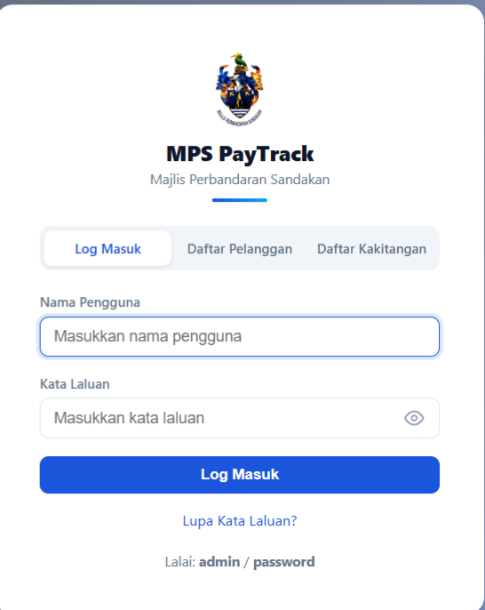
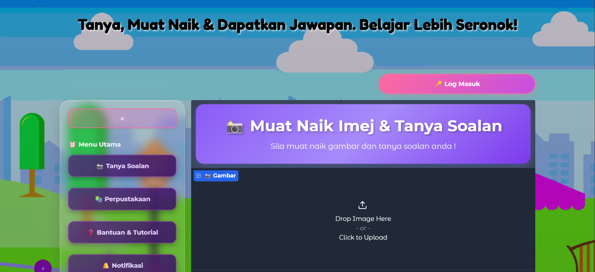

DocMind AI DOCUMENT ASSISTANT
An AI-powered document analysis system that helps MPS staff ask questions about uploaded documents and get relevant answers without manually searching through lengthy files
Hi, I'm
I build practical software solutions that solve real-world problems — from web applications to AI-powered systems. Currently open to new opportunities and collaborations.

About Me
My interest in technology grew from my enjoyment of creating things and finding ways to solve problems.
During my industrial training at Majlis Perbandaran Sandakan, I had the opportunity to work on real systems and understand how technology is used to support daily work.
I contributed to projects such as DocMind AI Document Assistant, MPS Paytrack, and the Project Management System (PMS),
where I worked on developing features, improving existing functions, testing systems, and making changes based on staff requirements.
These experiences taught me that software development is not just about writing code.
It is also about understanding the people who use the system, listening to their needs, solving problems, and making sure the final result is useful to them.
I’m particularly interested in software development and AI, and I enjoy learning new tools and technologies through hands-on projects.
I hope to continue improving my skills, gain more experience, and work on projects that are useful and meaningful.
Feel free to explore my projects and see some of the things I have worked on.
Featured Projects
Years Learning
Committed
What I Know
HTML, CSS, JavaScript, React
PHP, Python, FastAPI, REST APIs
MySQL, SQLite, SQL
Git, GitHub, VS Code, Figma
Vercel, InfinityFree, GitHub Pages, Hugging Face Spaces
PaLiGemma, QLoRA, PyTorch, Hugging Face, Groq API
Responsive UI, UX principles
My Work

An AI-powered document analysis system that helps MPS staff ask questions about uploaded documents and get relevant answers without manually searching through lengthy files

A web-based payment management system developed to help manage, track, import, export, and report payment transaction records more efficiently.

An AI-powered system that allows students to ask questions about STEM-related images and receive answers using a fine-tuned PaliGemma model with QLoRA.
Journey
Synxsoft Sdn Bhd — Selected as a Junior Application Developer under the PROTÉGÉ programme. Prepared to contribute to web application development, debugging, database management, and software development tasks using my skills in PHP, JavaScript, MySQL, and related technologies.
Majlis Perbandaran Sandakan (MPS) — Completed a 24-week industrial training as an ICT & Multimedia Support Intern. Developed and maintained internal web systems including DocMind AI and PayTrack, worked with PHP, MySQL, JavaScript, HTML/CSS, Groq API, and SMTP services, and provided ICT support such as system troubleshooting, equipment management, network setup, and multimedia tasks.
Universiti Malaysia Sabah (UMS), Kota Kinabalu — Bachelor of Computer Science with Honours (Software Engineering), CGPA 3.52. Studied software development, database systems, web development, system analysis and design, software engineering, and artificial intelligence. Completed a Final Year Project on a Visual Question Answering System for Primary School STEM Education using PaLiGemma and QLoRA.
Get In Touch
Have a project in mind, a job opportunity, or just want to say hi? My inbox is always open.
zaraasudirman99@gmail.com